来源：https://ktuszl372b.feishu.cn/docx/WDNwdDWndotTW4xtqGccmcbVnQw
Hello，我是 Leeka ，一位爱用影刀搞副业的 RPA 老师。
好久不见，甚是想念。最近一段时间我研究了不少东西，学会了几个工具的玩法，给自己新增加了几个技能点。前几天，我也是成功攻克了飞书多维表格，并且实现了 RPA+多维表格的自动化操作，工作效率又提高了不少~
我把这件事分享到了生财朋友圈，结果有幸被生财的高盛老师看到，并且留言说可以写一篇帖子来让大家一起参考。于是我在生财里看了一下，发现虽然不少圈友都有使用飞书多维表格的习惯，但是如何真正落地去操作飞书多维表格的内容，还真没太多人分享过，更别提 RPA + 飞书多维表格的应用了。
而我自己在学习配置期间是真的踩了很多坑，网络上的教程也都是有头没尾的，我花了几天时间将网络上找到的知识碎片都串联了起来，才有这篇帖子的诞生，想必对也想使用飞书多维表格提升效率的大家，也会有所启发的。
那么今天，就由我来给大家分享一下，我是如何通过借助 Kimi / ai 工具，通过自学实现了 RPA +飞书多维表格的自动化操作的。希望大家看完帖子后能少踩坑，同时掌握一个新技能~
阅读完这篇帖子，你将获得：
1、新手如何通过互联网搜索 + AI，让自己快速学习
2、0 编程基础，如何玩转 RPA +飞书多维表格自动化
我研究生的导师于博士曾经说过这么一句话：“未来大概就没有老师这种岗位了，因为所有的知识，都能在 Google 上找到。”
当时听觉得还不至于，但在经历了这次多维表格自动化的学习之后，我才明白这句话的含金量。
因此，贯穿整篇文章，我有以下 3 个行动指导思想 在这里和大家共勉：
① 没有找不到的知识，只有不合适的搜索词；
② 珍惜别人的时间，如果网络上能找得到的资讯，就不要浪费别人的时间答疑；
③ 当所有自己能想到的办法都行不通的时候，就可以大胆问专业人士了。
在自学过程中，我们一定会搜索大量的信息，为了提高我们的学习效率，我觉得对于知识来源的选择顺序应该是：
1、官方文档，肯定是第一位的，专业靠谱
2、如果官方文档没有大白话的解释，可以借用 AI 帮忙“翻译”
3、试着通过不同的搜索途径，找到其他人的分享，并根据内容进行复刻，确认知识可靠
相信经常使用影刀 RPA 的小伙伴们都有着这样的困扰：几乎每创建一个 RPA 机器人，就要创建一个对应的 Excel 文档来搭配机器人使用。而随着我们 RPA 机器人的逐渐增加，Excel 文档也是越建越多，这些文档管理起来就相对有点麻烦。
为了避免把不同的 Excel 搞混，我之前的做法是，将同类的应用都整合成一个 Excel 表。譬如，把小红书相关的所有 RPA 机器人，都用同一个 Excel 文档来进行搭配。
例如我会将以下四个机器人合并到同一个 Excel 表里：
① 小红书养号
② 小红书关键词采集笔记
③ 小红书热门笔记采集评论
④ 小红书采集长尾词
然而前几天，我群里的一位朋友提到了一个新的需求，让我把目光放到了多维表格上：
这位朋友从事的是电商业务，每天都需要从公司系统里导出下属前一天的工作表现，然后再将内容填到飞书多维表格里。
因为需要同步数据给其他人，用 Excel 就不太合适了，一定要用飞书多维表格。于是他就问我，在影刀里要怎么操作飞书多维表格。
一开始我以为，飞书多维表格嘛，不就是网页版的 Excel，能有多难呢？而且影刀里也有配备的指令，所以按理说这不应该是啥大问题。
结果没想到，我才刚开始操作了一下，立马就打脸了。
打开影刀后我们会发现，飞书相关的指令被分成了四大类：【飞书多维表】、【飞书电子表格】、【飞书电子表格（RPA）】、【飞书多维表格（RPA）】
后来网上搜索了一圈后，我了解到【飞书多维表格（RPA）】是新版本的指令，所以后续我们就用这个分类里面的指令来进行自动化操作。
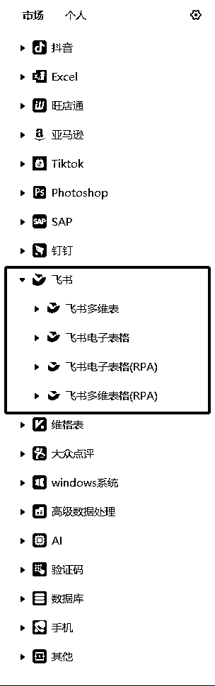
点开【飞书多维表格（RPA）】这一栏，我们发现，影刀对于飞书多维表格的操作基本上就只有三种：【增】、【删】、【改】。
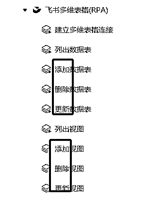
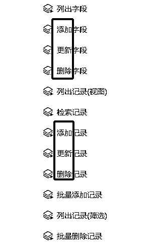
【增】新增记录、添加数据表、添加字段、新增多条记录
【删】删除一个数据表、删除视图、删除字段、删除记录、批量删除记录
【改】更新记录、更新数据表、更新视图、更新字段、更新多条记录
这就非常有意思了，也就是说，虽然多维表格看着和 Excel 差不多，但在影刀中，对于多维表格和 Excel 的操作指令是完全不同的。飞书多维表格的自动化，相对于 Excel 自动化，其实是一个全新的领域，需要从零开始学习。
比如影刀里我最喜欢的 Excel 指令之一【列上第一个可用行】，就不能在飞书多维表格自由使用。
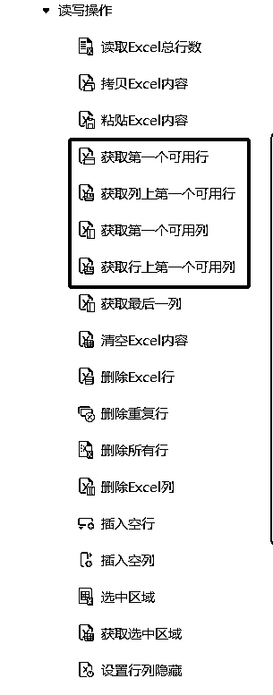
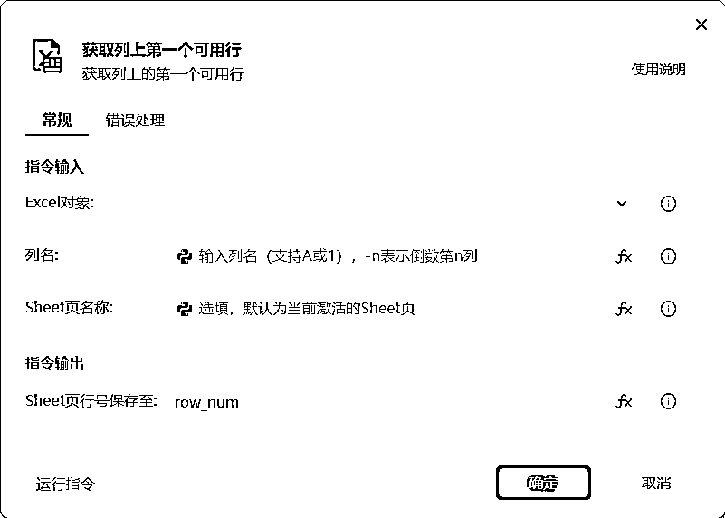
既然是全新的领域，那么在最开始，我得先了解一下飞书多维表格相关的基本概念，看看有哪些新名词、它们分别指代的是什么。只有掌握了这些之后，我才能更好地去搜索学习相关的教学内容，并且在影刀里配置正确的指令。
当然，其实去飞书的官方文档那边会有非常详细的介绍，但老实说，资料太全，有时候也会增加我们的心理负担。而且对于编程新手来说，完整的飞书开发者后台教程，简直就是一本天书，想要上手，恐怕需要花亿点点时间。
所以为了提升效率，我并没有去一字一句地查看飞书的官方文档，而且是选择去看影刀指令里会调用多维表格里的哪些内容。
毕竟后续都是在影刀里进行操作的，与其去整篇看完飞书的教学文档，不如直接以“确保影刀正常工作为导向”进行学习。
前面有说过，影刀对于多维表格的操作只有三种：【增】、【删】、【改】，但由于作用的对象不同，也就有了几个新的、我之前没有接触过的名词概念。而我现在要做的，就是将这些新的概念 跟我已经了解的 Excel 相关的概念作一个连结。
通过查看，我发现，在多维表格自动化这块，有以下几个我之前没有接触过的名词：
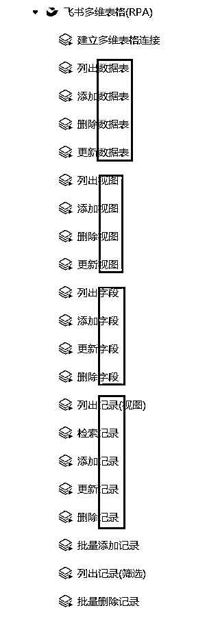
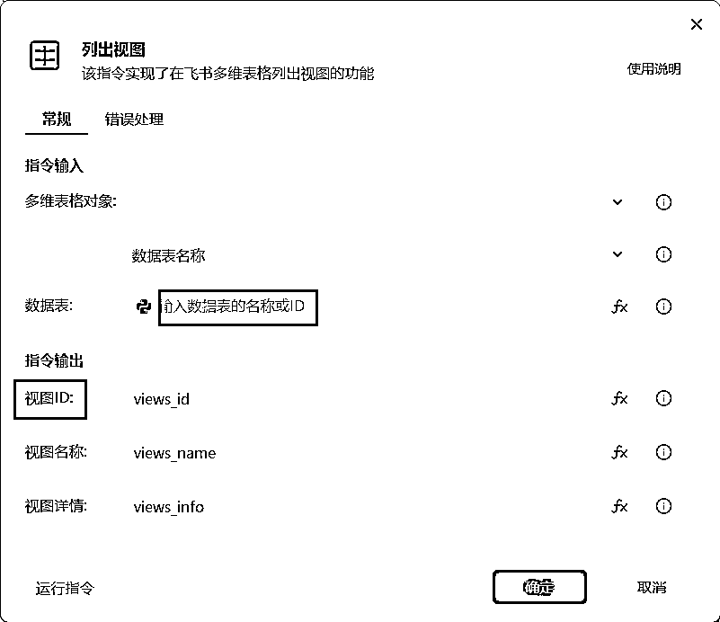
既然知道自己不知道什么，那么接下来就要去学习、理解这些词的含义。这里，我用了 Kimi 来帮我做“翻译”工作。
参考提示词：
我是一位飞书多维表格的新手小白，我现在完全不知道飞书多维表格里的名词都是什么意思，你能不能用大白话，给我解释，什么是数据表、什么是视图、什么是记录、什么是字段、以及我要怎么获取数据表ID和视图ID，我需要你确保你输出的内容正确无误，因此请从飞书多维表格官方文档中读取相关内容，并输出大白话的解释
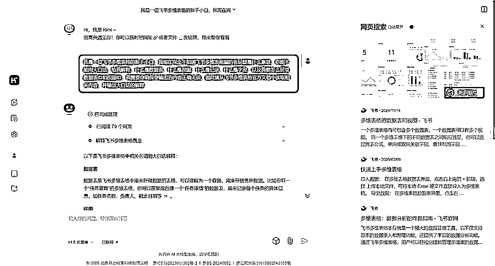
Kimi的输出结果
以下是飞书多维表格中相关名词的大白话解释：
数据表
数据表是飞书多维表格中用来存储数据的表格，可以理解为一个容器，用来存放各种数据。比如你有一个“任务管理”的多维表格，你可以在里面创建一个“任务详情”的数据表，用来记录每个任务的具体信息，如任务名称、负责人、截止日期等。
视图
视图是数据的展示形式，基于同一份数据可以生成不同的视图，每个视图可以有不同的展示方式和筛选条件。比如在“任务详情”数据表中，你可以创建一个“进行中任务”的视图，只显示当前正在进行的任务；还可以创建一个“已完成任务”的视图，只显示已经完成的任务。
记录
记录是多维表格中的行，每一行代表一条完整的数据。比如在“任务详情”数据表中，每一行就是一个任务的记录，包含了任务的名称、负责人、截止日期等信息。
字段
字段是多维表格中的列，每一列代表一个数据项。比如在“任务详情”数据表中，可以有“任务名称”、“负责人”、“截止日期”等字段，每个字段都有自己的数据类型，如文本、日期、人员等。
获取数据表ID
打开你的多维表格，找到数据表的链接，链接中会有一个 table= 后面跟着的一串字符，这就是数据表ID。例如，链接 https://xxxxxxxxxx.feishu.cn/base/PtRdbPjCFa5Og5sry0lcD1yPnKg?table=tblVBqxDbGXOJZPv 中的 tblVBqxDbGXOJZPv 就是数据表ID。
获取视图ID
同样打开你的多维表格，找到视图的链接，链接中会有一个 view= 后面跟着的一串字符，这就是视图ID。例如，链接 https://xxxxxxxxxx.feishu.cn/base/PtRdbPjCFa5Og5sry0lcD1yPnKg?table=tblVBqxDbGXOJZPv&view=vewjgHC22S 中的 vewjgHC22S 就是视图ID。
因为在提示词中，我限制了 Kimi 找答案的来源是 “在飞书多维表格官方文档中”，所以这时候 Kimi 输出的结果也就更加准确，都是飞书多维表格相关的内容，可以直接用。
看完了 Kimi 的解释，我发现：
好了，基本的概念了解了，接下来就看看我们如何通过影刀将数据写入到飞书多维表格里吧！
为了完善我的理解，我让 Kimi 给我输出一张飞书多维表格里的概念跟 Excel 概念一一对应的表格，这里供大家参考
| Excel概念 | 飞书多维表格概念 | 通俗解释 |
|---|---|---|
| 列 | 字段 | 表格中的每一竖列，用来放同类型的信息，比如“姓名”“年龄”等 |
| 行 | 记录 | 表格中的每一横行，代表一条完整的信息，比如一个人的所有数据 |
| 数据透视表 | 视图 | 不同的展示方式，比如表格、看板、甘特图等，用来从不同角度查看数据 |
| VLOOKUP函数 | 关联关系 | 把不同表格或区域的数据联系起来，方便整合和引用 |
| 公式与函数 | 公式与函数 | 用来进行计算和数据处理，比如求和、平均值等 |
| 宏 | 自动化流程 | 设置好规则后，系统自动完成一些重复性操作 |
| 保护工作表 | 权限控制 | 控制谁能看、谁能改表格里的数据 |
| 图表 | 仪表盘 | 把数据用图表的形式展示出来，更直观地看数据趋势和关系 |
| 插件 | 业务小程序 | 一些额外的小工具，用来扩展表格的功能 |
| 工作表 | 底表 | 存放所有原始数据的表格，是数据的基础 |
一般在影刀上要操控 Excel 或是 Word 的话，首先第一步是先定义操作对象，也就是操作哪个 Excel 或是操作哪个Word。
因为影刀里的操作逻辑就很简单，WHO - WHAT - HOW（前面说的增、删、改是HOW）
先有操作对象 WHO，然后再有操作方式 HOW，以及操作动作 WHAT
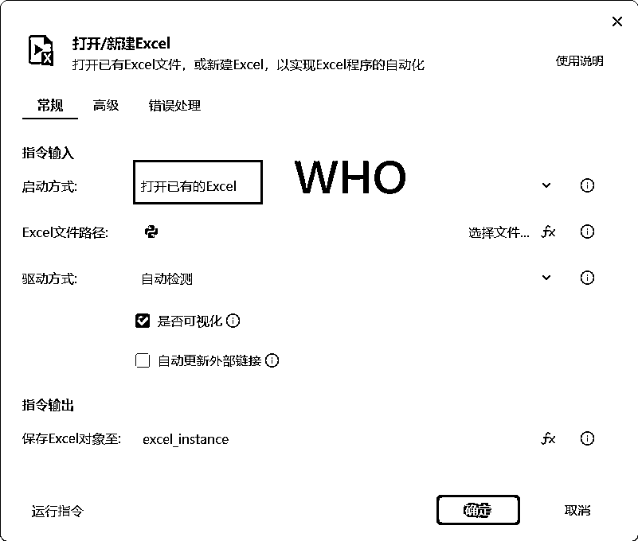
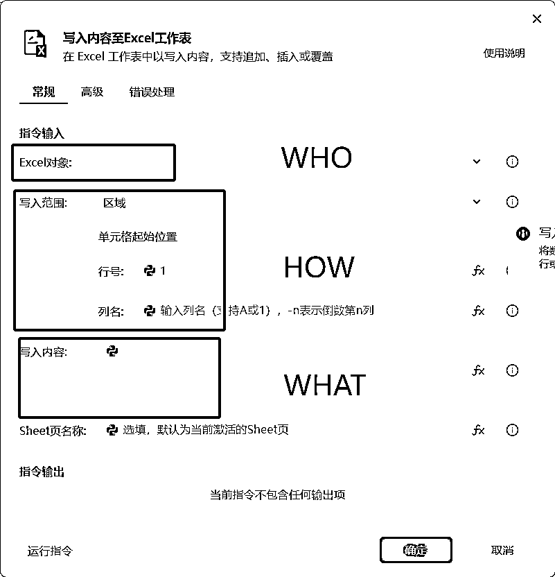
那么飞书多维表格也应该是一样的原理，我得先告诉影刀，我这次要操作的飞书多维表格对象是哪一个。
在【飞书多维表格（RPA）】里，就有这么一个指令【建立多维表格连接】，应该就是选择操作对象（WHO）的指令。
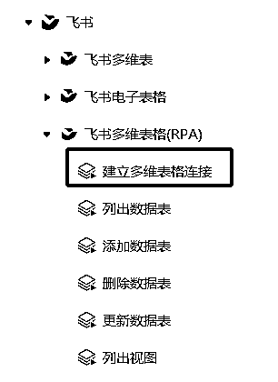
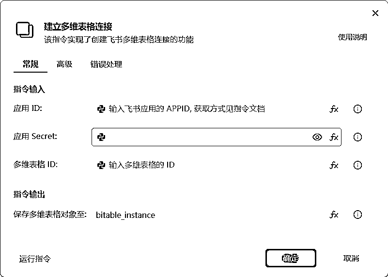
结果点开后，我又发现了几个新的名词：【应用 ID】、【应用 secret 】和【多维表格 ID 】，这些又是啥呢？按理说，飞书多维表格，给个链接，给个权限不就好使了吗？
不对，肯定有什么地方我还没弄清楚。
影刀有个好处，就是对于这些官方开发的指令都会有详细的讲解，所以我就点开了这个指令的使用说明，看看使用这个指令的时候，我需要填写哪些内容，以及这些内容都是从哪里来的。
建立多维表格连接的文档：建立表格连接 - 影刀帮助中心
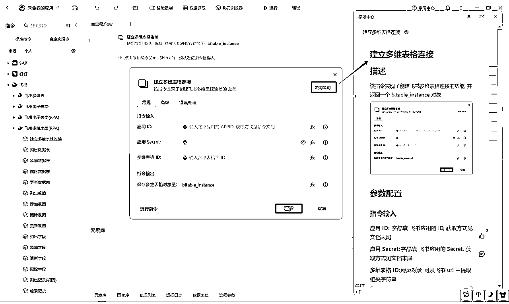
看完说明，我大概明白了：不同于我们直接在网页端对多维表格进行读写，使用影刀来操作多维表格时，相当于我们在调用飞书的 API 来进行读写，而这里就有一个鉴权需要提供 token（这相当于是门禁卡）的一个过程。
唯一不同的是，飞书多维表格的鉴权方式，并不是单独给某一个电子表格、多维表格开通 token ，因为如果用这种方式的话，也就意味着开发者每次都需要给单独的飞书多维表格去配 token（门禁卡），这对于开发者来说，无疑是一个巨大的工作量。
所以飞书选择了一种更便捷的方式，那就是开通一个应用，我们提前给这个应用配置好相关的权限（编辑多维表格等），然后再将需要操作的多维表格加入到这个应用里。这样的话，开发者就可以通过 API 来操控多维表格了。
这就有点像是，小区里给你配了小区大门的门禁卡（应用的权限），刷完门禁卡进入小区后才能走到自己家门口，然后再拿出家门钥匙来开门（表格对应的 token）。
所以要完成飞书多维表格的鉴权，我们需要完成这些步骤：
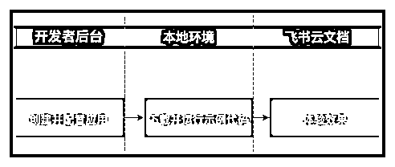
这种方式有个好处，就是一个应用可以链接多个多维表格或是电子表格，而不需要多次频繁根据不同的表格来填写不同的 token 。
OK，概念性的问题目前解决的差不多了，实操教程也看完几遍了，那么是时候着手实操一番了！邓爷爷说过【实践出真知】，这教程对不对、有没有遗漏信息，都需要咱去实操一遍才知道。
前面说了，如果我们想要通过第三方软件（影刀RPA）来控制飞书多维表格的话，首先就得新建一个应用。
相当于是我们作为小区的新住户，第一天需要先去物业那边办理小区的门禁卡。
登陆飞书开发者后台：开发者后台 - 飞书开放平台
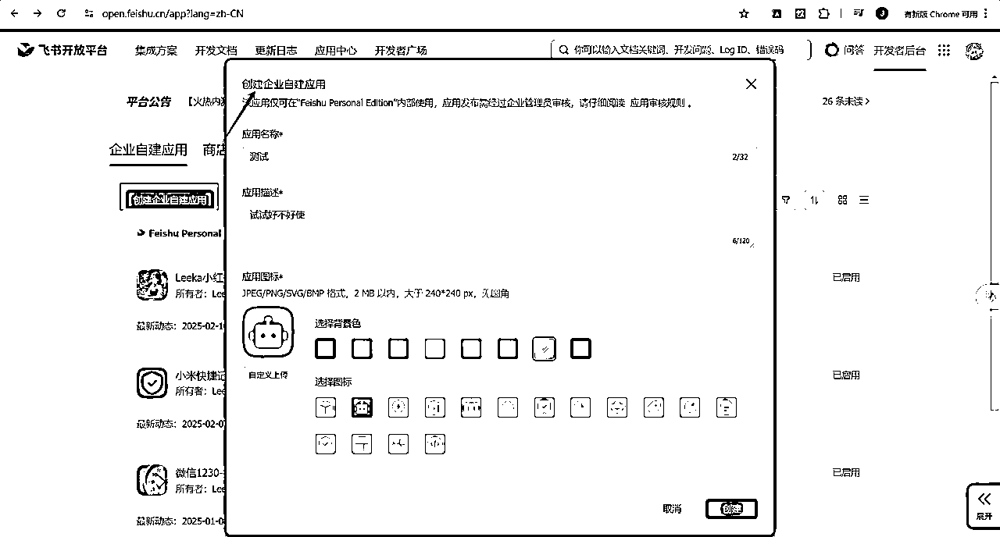
新建完应用之后，我们会发现，刚刚影刀中需要填的【应用 ID】和【应用 secret】就已经生成了。
（在飞书里分别叫 【app ID】 和 【app Secret】）
但是页面也提示了，这个应用还没有发布，所以这些配置是暂时不生效的。
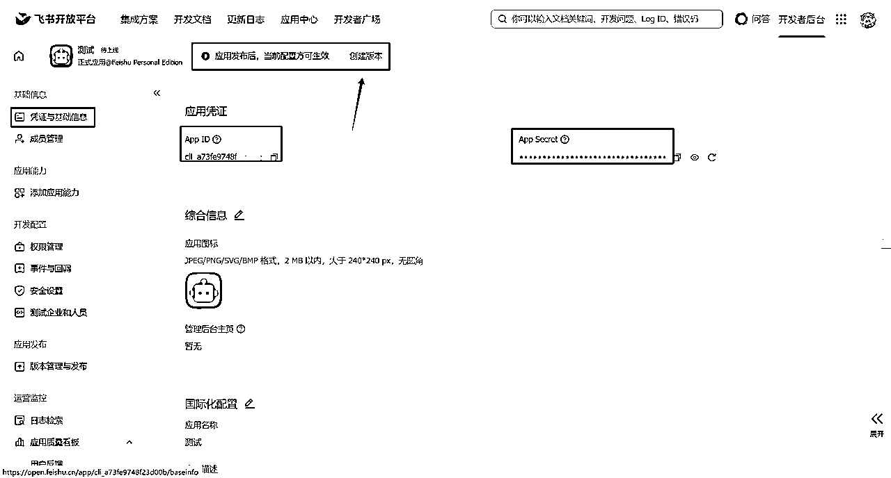
飞书里新建的企业应用默认是没有任何权限，需要我们先给这个应用配置相应的权限，然后再进行发布后才能正常使用。
（相当于小区门禁卡发下来后还没激活，是空白卡，需要先激活并和小区门进行配置后才能正常刷卡）
回归要主线任务，我们新建这个企业应用是为了能让影刀能正常控制飞书多维表格，所以我们要给应用开通【多维表格】里的所有权限。
当然，如果后续需要这个应用操控飞书电子表格的话，此时也可以一并配置好相关的权限。
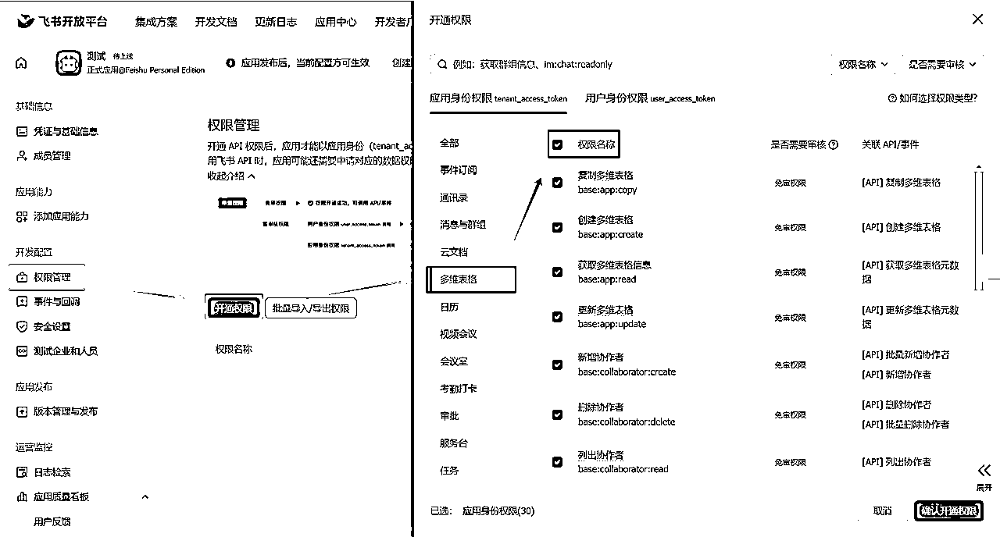
在给应用配置好多维表格操作权限之后，我们就可以发布这个应用了。
貌似目前都是免审核的状态，所以基本我们保存+提交后，这个应用就能正常使用了。
（框住的部分，按照页面提示填写即可）
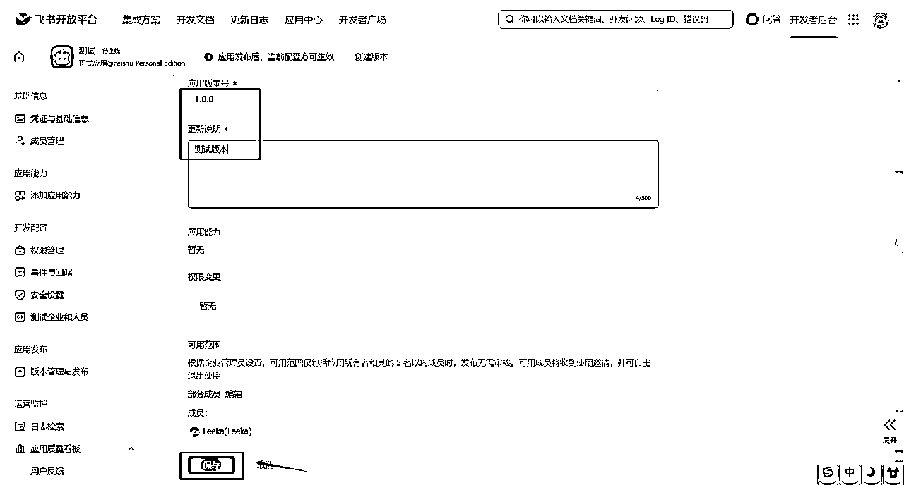
需要注意的是，目前我们只是配好了企业应用的权限，但是应用和我们要用的多维表格之间还没有任何联系，所以下一步，我们还需要让 要使用的多维表格 跟 应用 建联，这样才能让影刀正常控制对应的飞书多维表格。
回到我们需要操作的多维表格页面，点击右上角的【...】-【更多】-【添加文档应用】
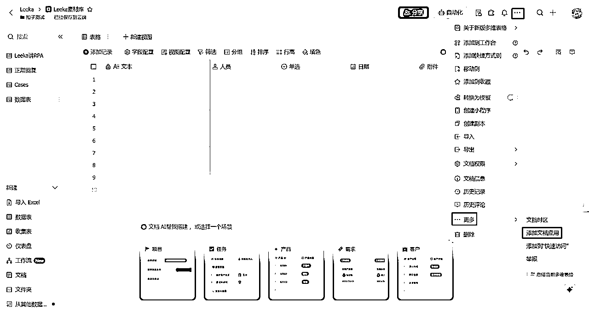
搜索我们刚刚整理好的企业应用，加入，这里可以选择【可编辑】或是【可管理】权限。
这两个的区别就是：可管理权限，可以邀请协助者；而可编辑权限，就只能对表格内容进行增删。
（我一般选择可编辑，毕竟有了这个 api 之后，就不需要邀请协作者了）
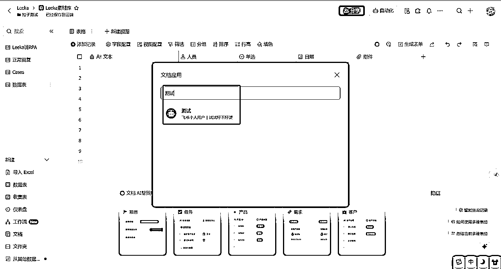
点击【添加】按钮，我们就完成了多维表格和应用的建联。
如果看到这里，你以为大功告成，那么就大错特错了，因为！同一个多维表格里，是可以建立多个数据表的，而每个数据表又可以建立多个视图。所以。在自动化操作时，我们需要保证机器人能够准确找到我们要用的数据表/视图，然后在正确的数据表/视图里增减内容。
因此，我们现在需要解决的问题是：如何让影刀知道我们是在哪个数据表里进行操作的？
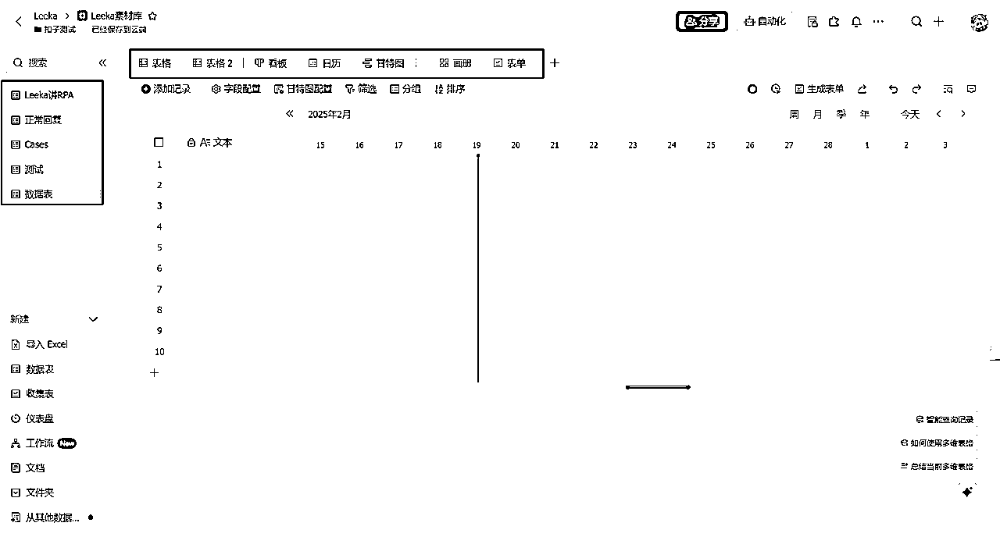
回到影刀前面的指令，我们现在已经有了【应用 ID 】和【应用 Secret 】，还缺一个【多维表格 ID 】（飞书里面叫 table ID）没有获取到。
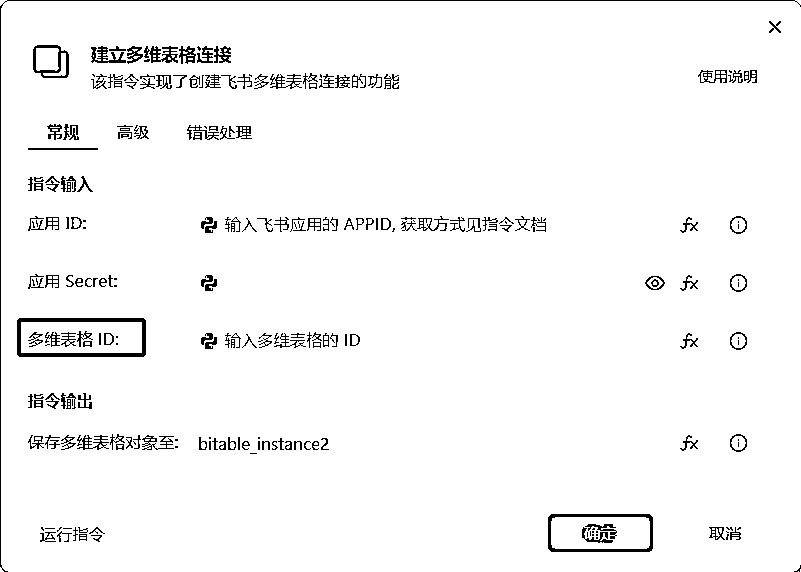
而这个【多维表格 ID】（table ID），就是让影刀定位到相应多维表格的关键。
大家通过观察可以知道，我们目前打开的多维表格，本质上其实就是浏览器上的一个页面。
也就是说，不同的表格文档，其实就是几个不同的网页。而不同网页最本质的区别，也就是网址的不同。
所以，我们或许可以从网址入手，看看它们有哪些不一样。
首先，我新建了两个表格，分别命名为【测试】和【数据表】。我们来看看这两个表格的网址上会有哪些不同。
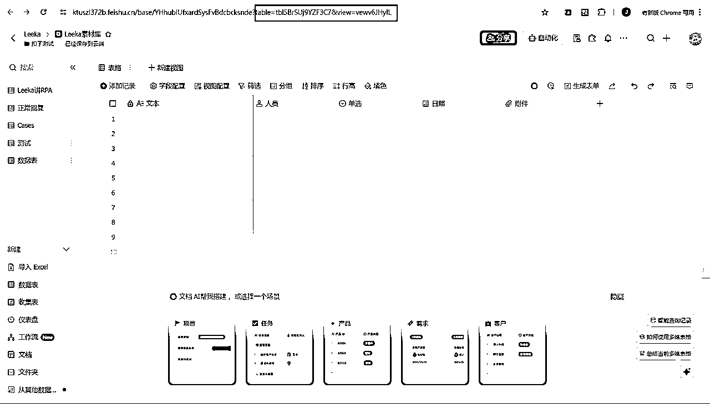
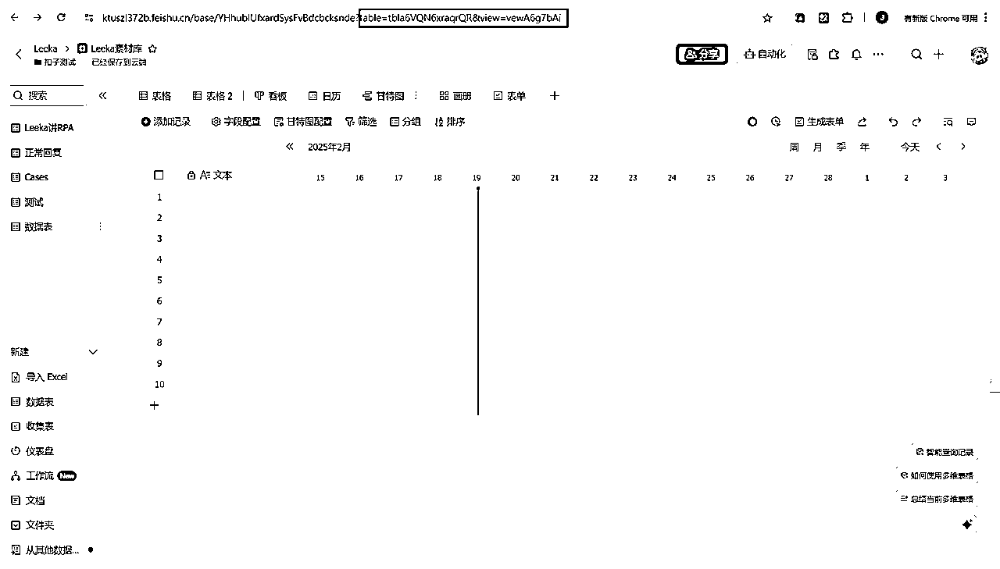
观察后我们会发现，两个网址的前半部分是一模一样的，区别都在后半部分：
接着我们再看看，同一个数据表里的不同视图，它们的网址后缀都有什么不同
【表 格】table=tbla6VQN6xraqrQR&view=vewWcHcFYE
【表格2】table=tbla6VQN6xraqrQR&view=vewdjbkBfa
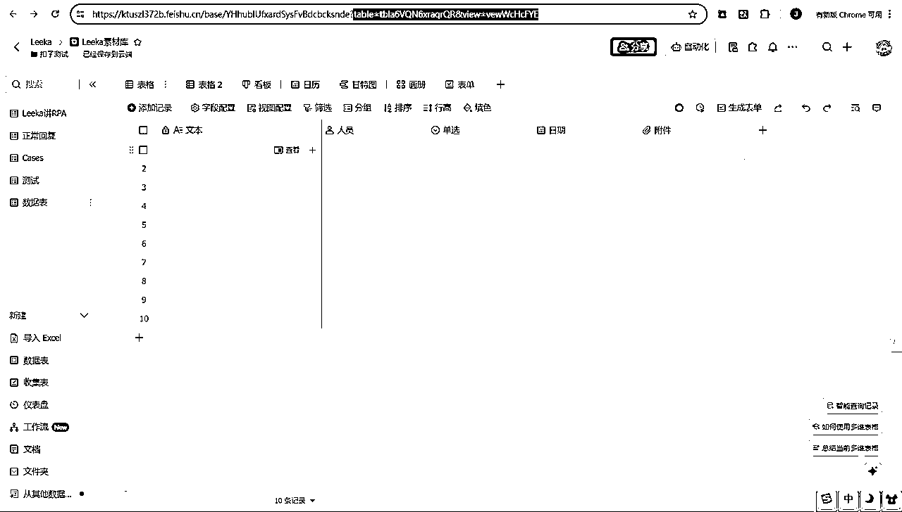
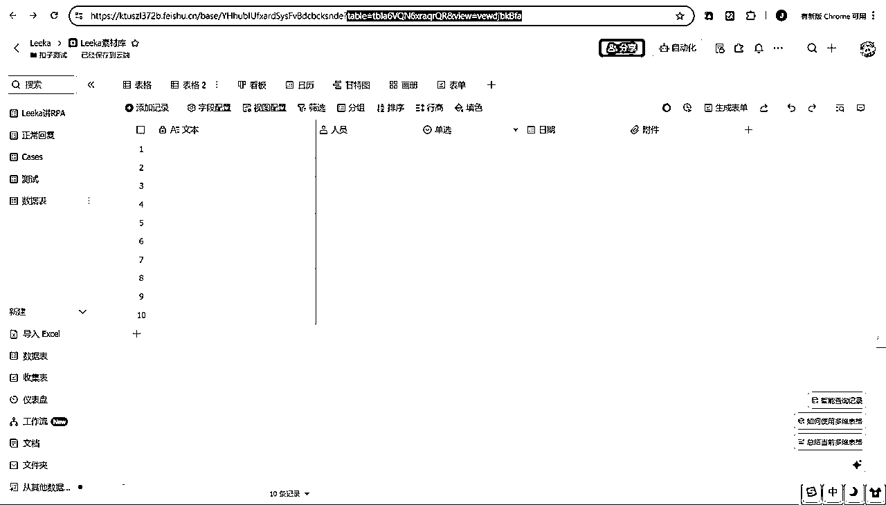
通过上面两个对比，我们可以得出结论：
① 同一个多维表格里，不同的数据表，以网址的 table= 和 &view 之间的字符串进行区分
② 同一个多维表格里，相同的数据表，不同的视图以 &view= 后面的字符串进行区分
而我们要获取的是【table ID】，看单词也可以大致推断出，table ID 应该就是table= 和 &view 之间的字符串了
即：文档 https://xxxx.feishu.cn/base/xxxx?table=12345678&view=87654321 的 table ID 就是 12345678
通过搜索引擎的帮忙，我确定我的结论是对的。那么接下来我们就需要解决，如何获取 table ID？
多维表格的数据容器，一个多维表格中至少有一个数据表（ table ），也可能有多个数据表。每个数据表都有唯一标识 table_id。table_id 在一个多维表格 App 中唯一，在全局不一定唯一。你可通过多维表格 URL 获取 table_id ，下图高亮部分即为当前数据表的唯一标识。你也可通过列出数据表接口获取 table_id 。
指数据的汇总和展现形式。视图有多种类型，包括表格视图、看板视图、画册视图、甘特视图和表单视图等，可参考飞书帮助中心文档视图类型。一个数据表至少有一个视图，可能有多个视图。每个视图都有唯一标识 view_id，view_id 在一个多维表格中唯一，在全局不一定唯一。你可通过多维表格 URL 获取 view_id，下图高亮部分即为当前视图的唯一标识。你也可通过列出视图接口获取 view_id。暂时无法获取到嵌入到文档中的多维表格的 view_id。
表单视图是多维表格的一种视图类型，形式类似于问卷，可以用来收集信息和数据。每个表单都有唯一标识 form_id，即当前视图的 view_id。form_id 的获取方式和 view_id 的获取方式相同。
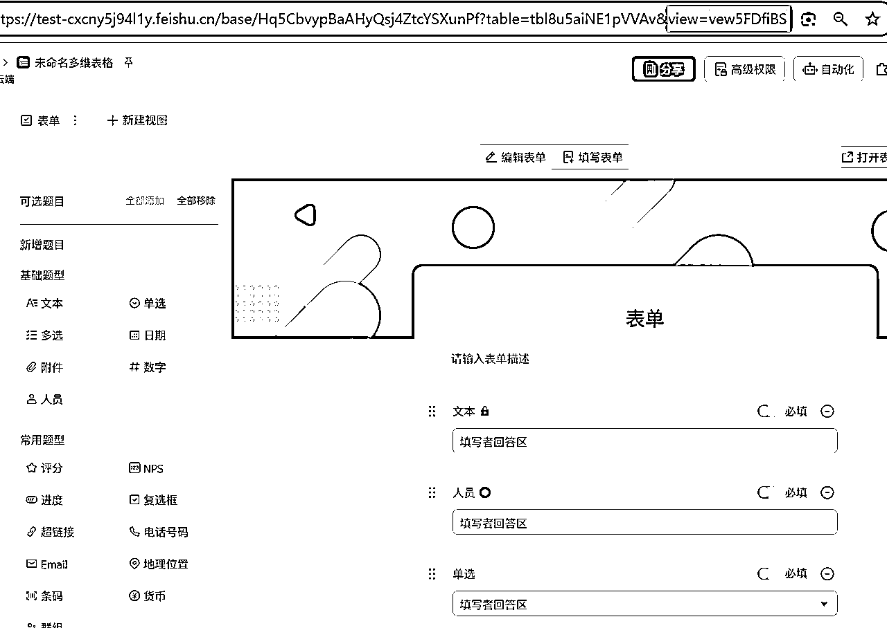
总结下来就是，咱之前找到的结论是正确的
飞书多维表格里的 table_id 就是以网址的 table= 和 &view 之间 的字符串，于是到这里，影刀指令里的【应用 ID 】和【应用 Secret 】和【多维表格 ID】，我们就已经全部获取到了
至此，我们就已经成功用影刀连接上我们指定的飞书多维表格啦！
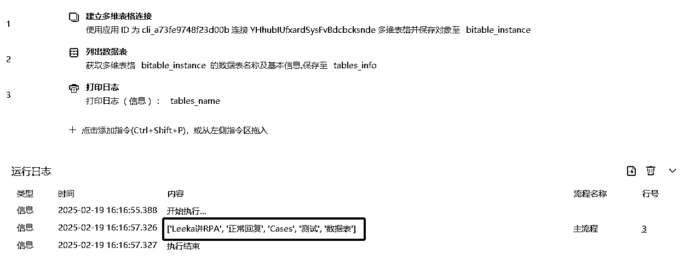
既然我们已经成功连接了影刀和多维表格，后续就要我们要实现的就是：如何利用影刀，对指定的飞书多维表格里的特定数据表进行增、删、改操作。
这部分的坑也非常多，建议仔细看，文末告诉我，我总共踩过多少坑 TAT。
按照平时操作 Excel 的经验，一般如果我想要去增加/修改/删除 Excel 里面的内容的话，我们直接告诉影刀，在哪个 Excel 表里的哪个 Sheet 页的哪一行哪一列进行操作就可以了。
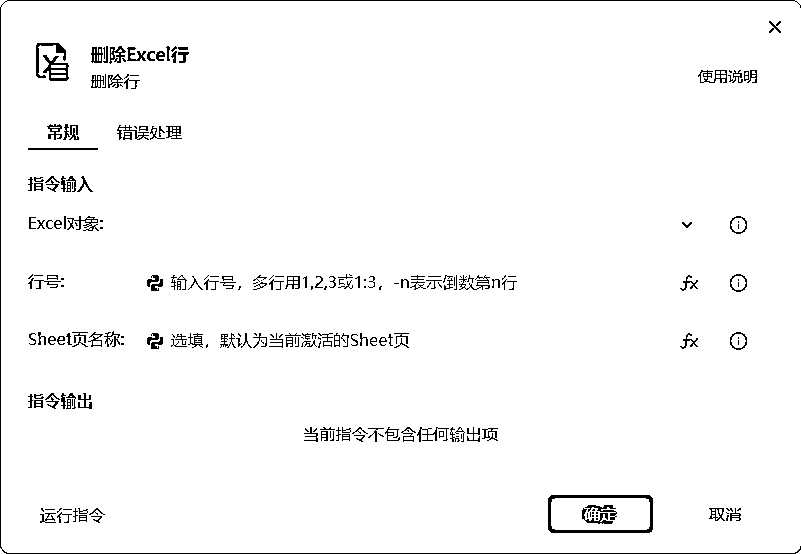
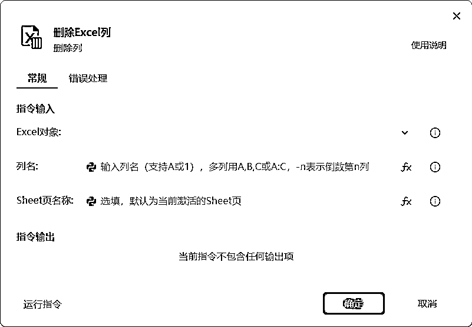
而如果将飞书多维表格看作是 Excel 的话，那么 table 就像是多维表格里的 Sheet，目前我们已经可以定位了。
但问题是，我要如何定位指定表格里的行和列呢？似乎多维表格并没有 A列、B列、C列的概念啊？
我先在影刀里找到对应的指令，【添加记录】、【更新记录】，此时又有一个新的概念了【记录 ID 】
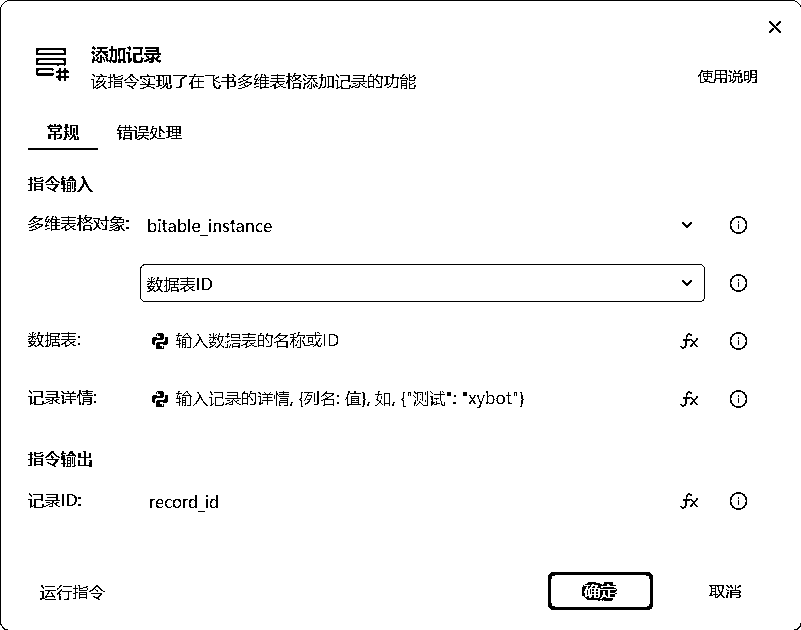
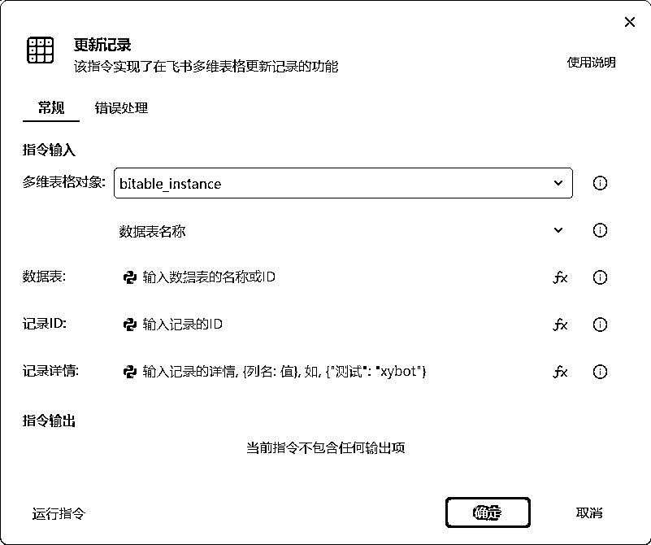
所以，这时候我们就又需要搞清楚，什么是记录 ID ？
必应告诉我们，影刀里说的【记录 ID】其实就是多维表格里 每一行 对应的独立的 Record ID。
好家伙，行号也有了自己的 ID 了
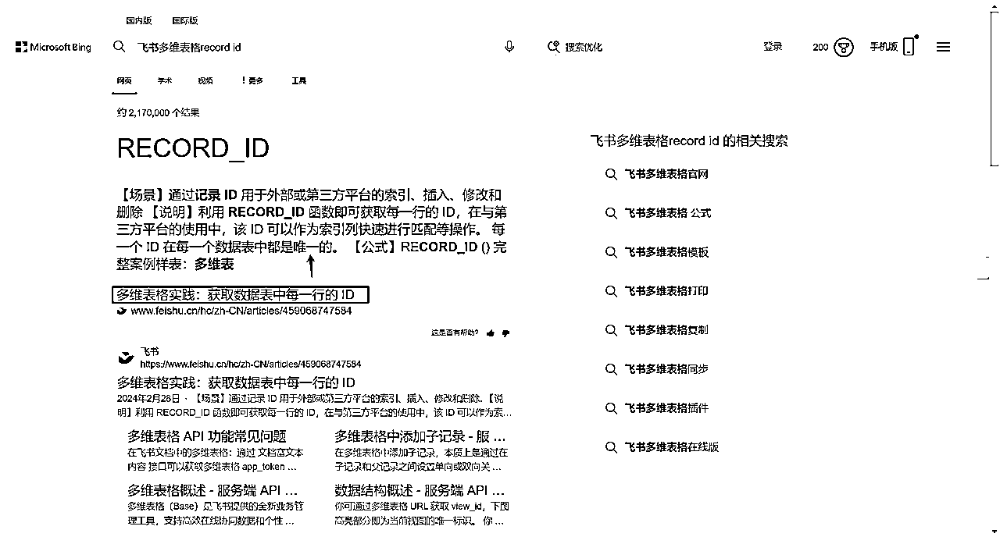
知道了【记录 ID】(对应飞书多维表格的record ID) 是什么之后，接下来我们的问题就变成了：如何获取 record ID ？通过点击这个网页链接后，我们就看到飞书给我们的解释了。
【场景】通过记录 ID 用于外部或第三方平台的索引、插入、修改和删除
【说明】利用 RECORD_ID 函数即可获取每一行的 ID，在与第三方平台的使用中，该 ID 可以作为索引列快速进行匹配等操作。每一个 ID 在每一个数据表中都是唯一的。
【公式】RECORD_ID ()
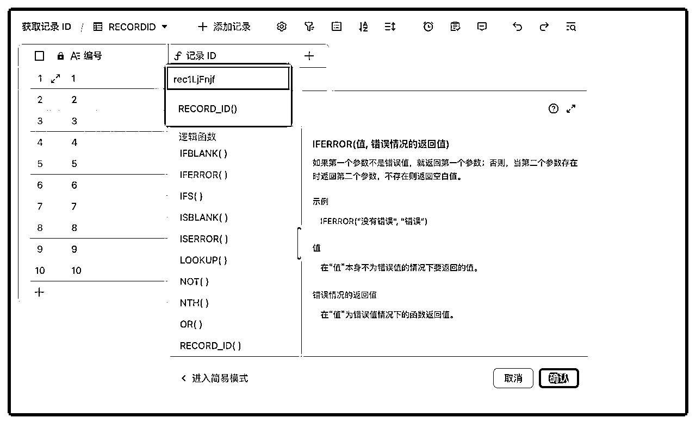
我们在多维表格的数据表新增字段，字段类型选择【公式】，然后编辑公式 RECORD_ID()
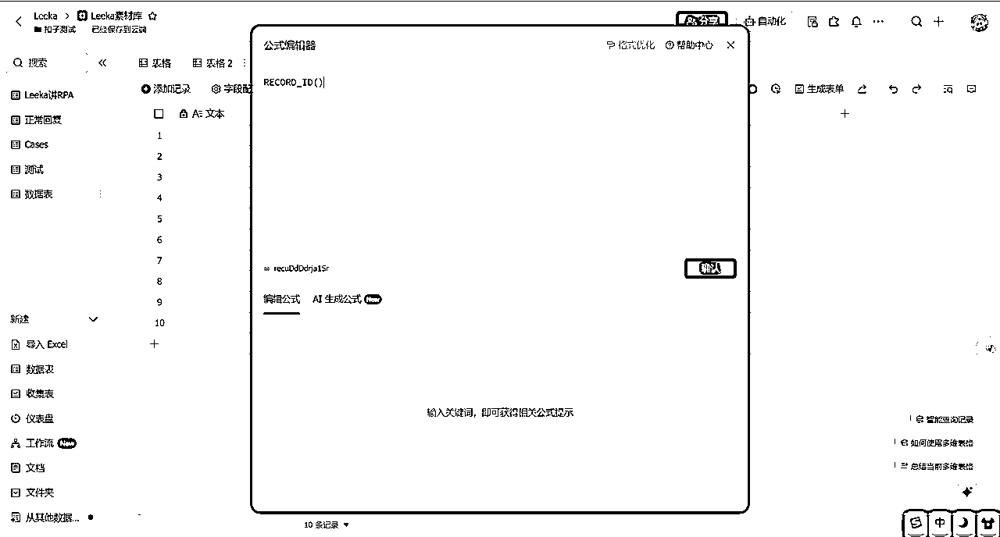
一开始，我还以为飞书多维表格的记录对应的是 Excel 里的行号，那么按理说，不同的数据表的相同记录 ID 应该也是一样的才是，这样可以更大程度地方便用户操作。
而事实上是，我在同一个飞书多维表格里的两个不同的数据表，分别获取了前 10 行的记录 ID ，都不一样。
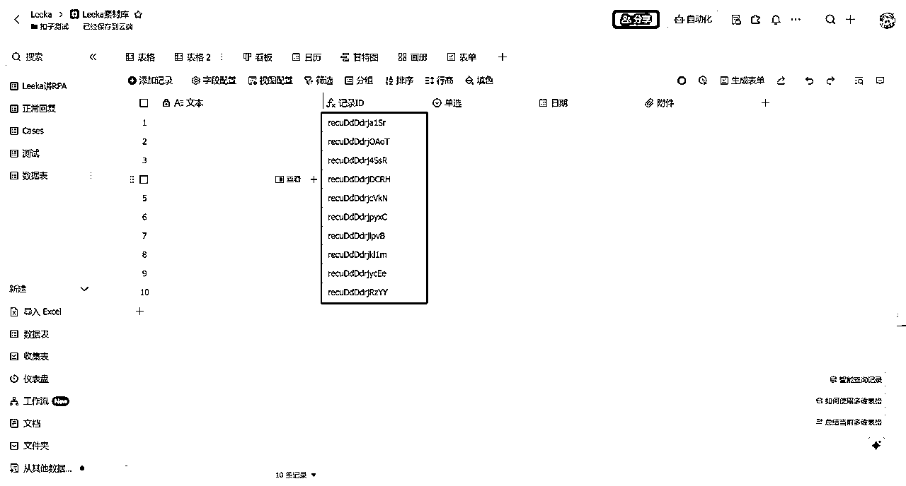
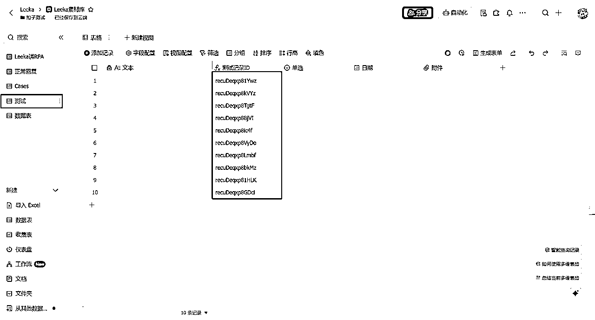
为了验证我的想法，于是我又去让 Kimi 给我找资料并解释
Kimi 的输出结果：
不同的数据表中，相同行号的记录 ID 是不相同的。在飞书多维表格中，记录 ID 是用来唯一标识每一条记录的。根据飞书官方文档的说明，“每一个 ID 在每一个数据表中都是唯一的”。这意味着，即使两个数据表中有相同行号的记录，它们的记录 ID 也会不同，因为记录 ID 是在数据表范围内唯一的，而不是在整个多维表格中唯一。
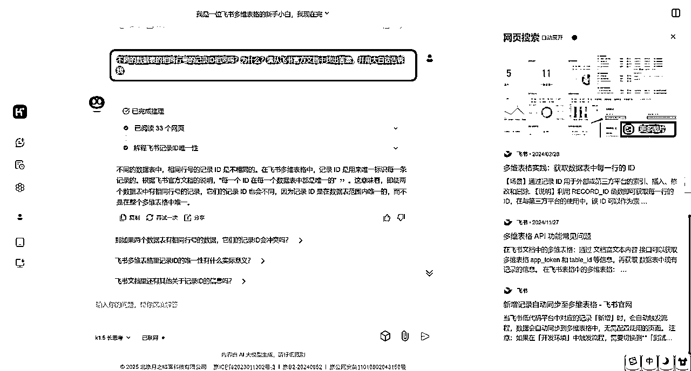
OKK，不同数据表相同行号的记录 ID 是不相同的，操作上难度了，但没关系，一步一步来。
在连接上飞书多维表格之后，我们肯定是需要对里面的内容进行操作的，最常用的其实就是在原来的表格的记录上，新增一些记录的内容。那么，我们试着让影刀来帮我们在飞书多维表格的指定数据表里增加记录吧。
前面 Kimi 有跟我们讲过，记录其实就是一行的意思，而新增记录，其实就是新增一行信息的意思。
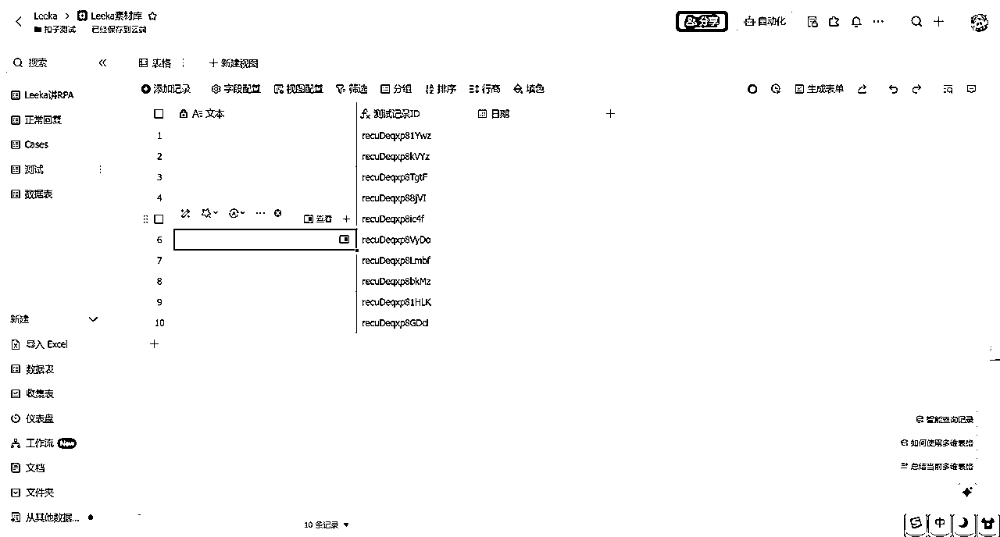
例如：我们想要新增一行，【文本】列写入【Leeka讲RPA】，【日期】列写入【2025-02-20】
根据影刀指令的提示，我需要将内容整合成字典的形式，也就是：{"列名":"新增内容"}
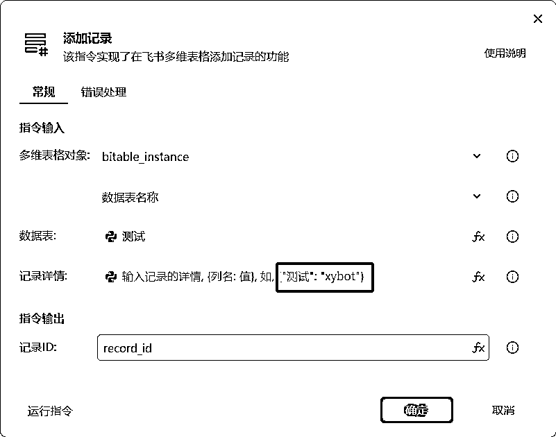
所以我整合成的记录详情是：{"文本":"Leeka讲RPA","日期":"2025-02-20"}
注意：在影刀里所有输入的符号，都需要是英文符号的，否则会报错。
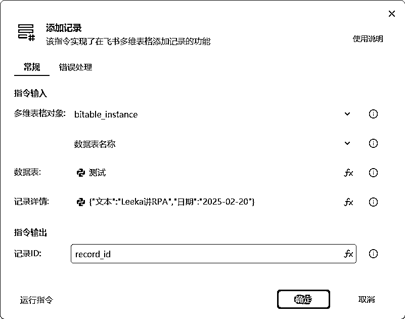
看看运行效果，没问题
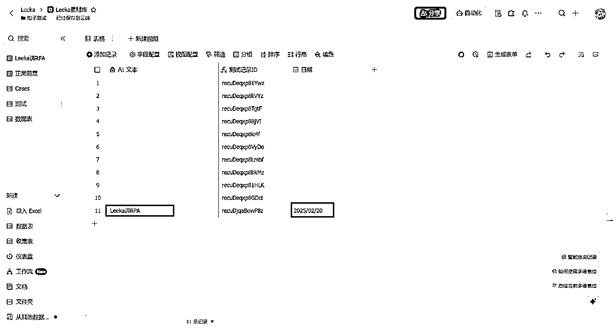
而如果数据表有很多列，但我们不需要在每一列都写入内容的话，那么我们只需要字典里填入对应的列名和内容就可以了。
比如，我只想在【文本】列写入【机器人流程自动化】，在影刀的配置则应该是：
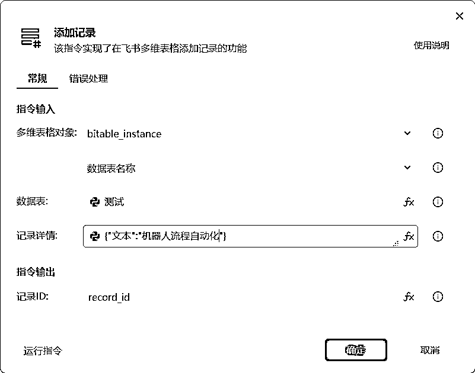
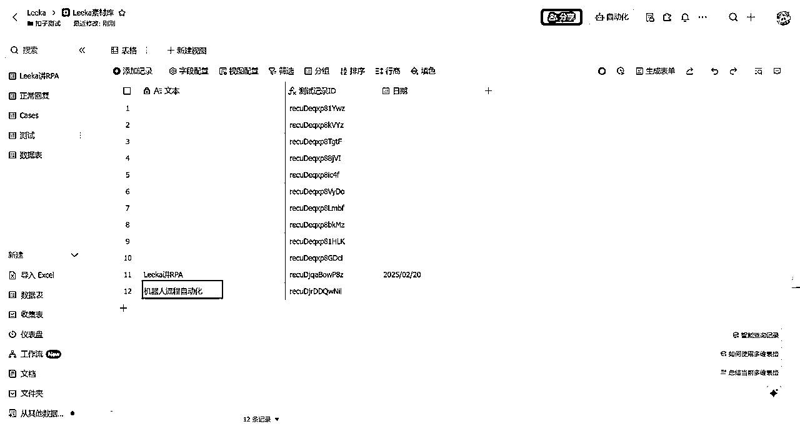
细心的你想必发现了，【新增记录】并不会先查看前面的内容是不是空值，而是直接就在原有行的下方增加内容。如果我们想要删除所有空行，再新增内容的话，那又该怎么处理呢？
我们要如何提供记录 ID 呢？总不能每次都要人工先去操作多维表格，找到记录 ID ，再通过这个记录ID逐一删除吧？这也太麻烦了。
我想影刀肯定也想到这一点了，那是不是应该有查找记录 ID 的功能，然后我就找到了【列出记录（筛选）】，利用这个指令，我们可以通过已知的数据找到对应的记录 ID，然后对内容进行修改。影刀还把飞书文档筛选教程附上了。
此时，我需要解决的问题就是，如何让影刀协助我去筛选空白行？
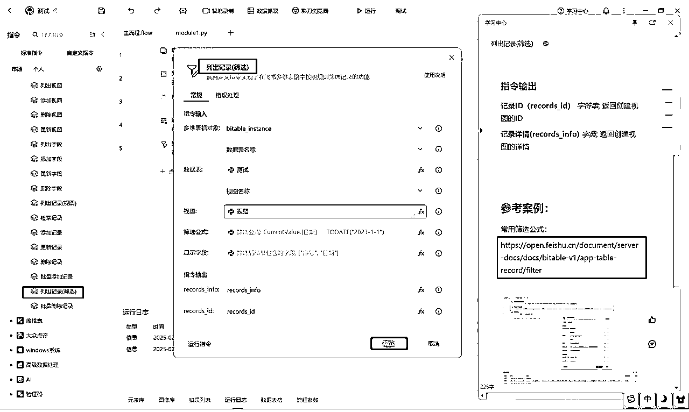
常用筛选公式：
记录筛选的指南 - 服务端 API - 开发文档 - 飞书开放平台
简直就是发现了新大陆，刚好可以解决我们前面的痛点，就是先删除没有内容的空行，然后再新增记录。
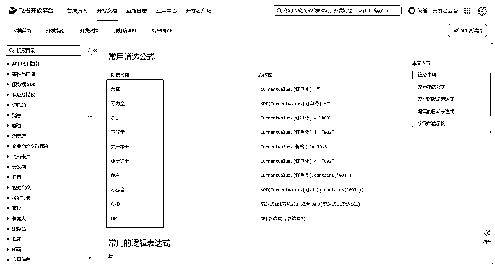
利用飞书文档给的公式，我就成功让影刀找到了这些空行的记录 ID
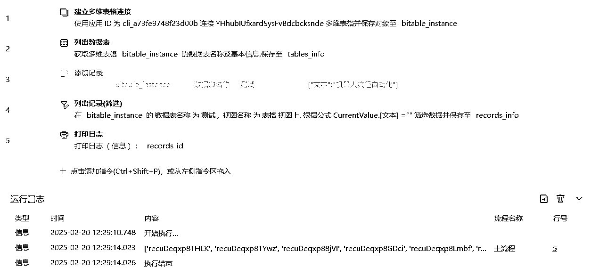
既然我们已经获取到了空行的记录 ID 列表，接着就可以用影刀的【批量删除记录】，直接把空行都删除！
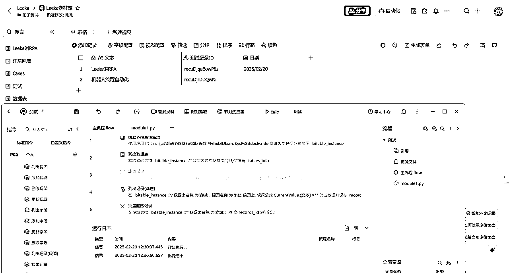
此时，你可能要问了，那如果我想要查找的并不是空行，而是特定内容的行，又该怎么做呢？
譬如，我们此时想要删除名为【测试】的数据表里，文本一列是【机器人流程自动化】的内容。
我们的操作步骤就会是：
1、先查找【机器人流程自动化】所在行的 Record ID
2、通过影刀的指令【删除记录】将其删除
（备注：删除记录，默认删除一整行，如果只是想删除某个单元格的内容，则需要使用【更新记录】指令）
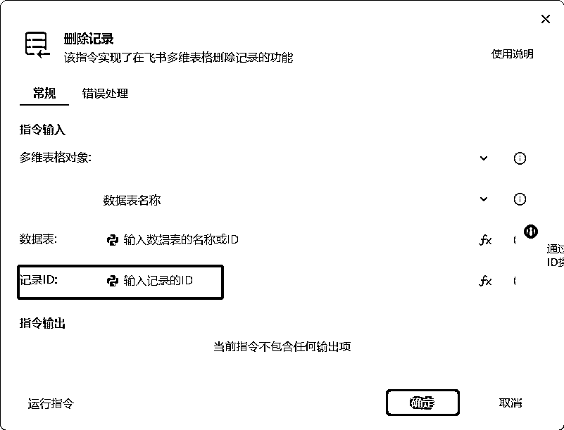
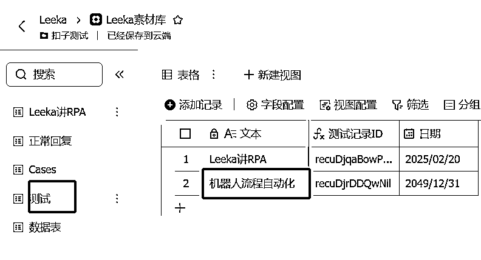
直接在影刀实操看看效果，轻松将一整行内容都删除。
终于来到了更新记录的操作了！顾名思义，“更新记录”的含义就是将飞书多维表格里的数据，重新修改。可以是将内容填写到空白行，也可以是将原有的内容变更。
在使用更新记录的时候，通常会有两种情况：
如果是第一种，表格里有内容，那么这一行的 record_ID 我们本身就是知道的，直接修改即可。如果流程里只需要更新某个行里的内容，那么我们只需要在指令前面，增加一个【列出记录（筛选）】即可。
譬如，我现在需要将【测试】的数据表里第一行的日期，从【2025-02-20】改成【2049-12-31】，那么操作就应该是下方这样的：
需要注意的是，这里列出记录（筛选）指令里，输出的变量是一个列表（就是有很多个不同的数据），而不是单个具体的内容，所以我们在选在某一个确切的 记录 ID 的时候，需要选择“列表里的具体某一项”，否则是会报错的。
哒哒，成功让影刀在我们指定的飞书多维表格里更新记录啦！
相信看到这里的你，想必此时已经摩拳擦掌，想要试试看影刀如何控制飞书多维表格了。篇幅关系，这篇帖子只是讲述了我们可以如何通过影刀 RPA 已有的指令和 Kimi / AI 的帮助，让我们学会掌握如何通过第三方软件去控制飞书多维表格进行【增】、【删】、【改】的操作。
而我想分想的除了实操步骤之外，其实更希望大家能通过我以上一系列的操作，来树立起一个概念，就是：我们时刻都可以通过自己目前已经掌握的技能，去学习新的技能。
而这就是心理学上说的【构建主义学习】。譬如我就是通过已经掌握的影刀 RPA 技能 + AI 技能，然后让自己去学习这项新的通过 API 控制飞书多维表格的新技能。
建构主义主张世界是客观存在的，但是对事物的理解却是由每个人自己决定。不同的人由于原有经验不同，对同一事物会有不同理解。建构主义学习理论认为：学习是引导学生从原有经验出发，生长（建构）起新的经验。
时刻记住：你想要的知识，都在搜索引擎里，用好自己目前已经掌握的技能，你随时可以学习其他新的技能。
好啦，以上就是这篇帖子的全部内容啦！希望对你有所帮助，我是 Leeka ，一位爱用影刀搞副业的 RPA 老师，我们下篇帖子很快再见~